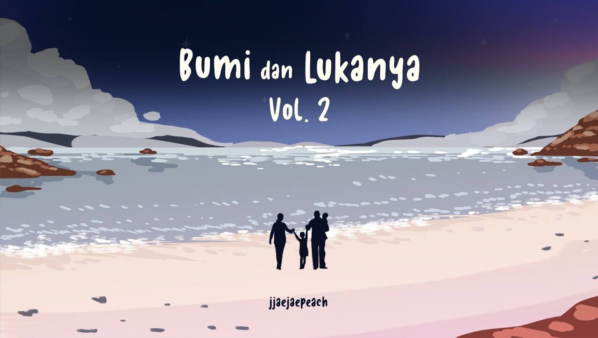

Going Seventeen
One of my biggest comfort shows is Going Seventeen. Whenever I feel tired, stressed, or just need a good laugh,
this show is always my go-to. Watching the members joke around, laugh, and be themselves instantly lifts my mood
and makes everything feel lighter.Going Seventeen isn’t just entertaining, but comforting in its own way. It feels
like a safe space where I can relax, forget about my worries for a while, and just enjoy the moment.

One of my interests is reading alternative universe (AU) stories on Twitter. I enjoy how these stories explore different perspectives, emotions,
and realities through creative storytelling. Among all the AUs I’ve read, Bumi dan Lukanya is one of my favourites because it gave me the biggest impact in my life.
The story stayed with me long after I finished reading it, making me reflect on emotions, growth, and the meaning behind every chapter. It’s more than just a story to
me, it’s something that left a lasting impression on my heart.

Other than that, my interests is taking photos of cats. I enjoy capturing their cute expressions, random moments, and natural behaviours.
Every cat has its own personality, and photographing them feels like a fun way to appreciate those small details. It also allows me to slow down and enjoy
the moment, turning simple encounters with cats into something meaningful and memorable.